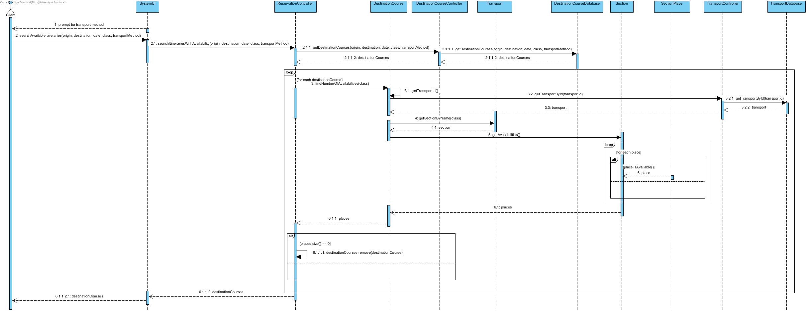
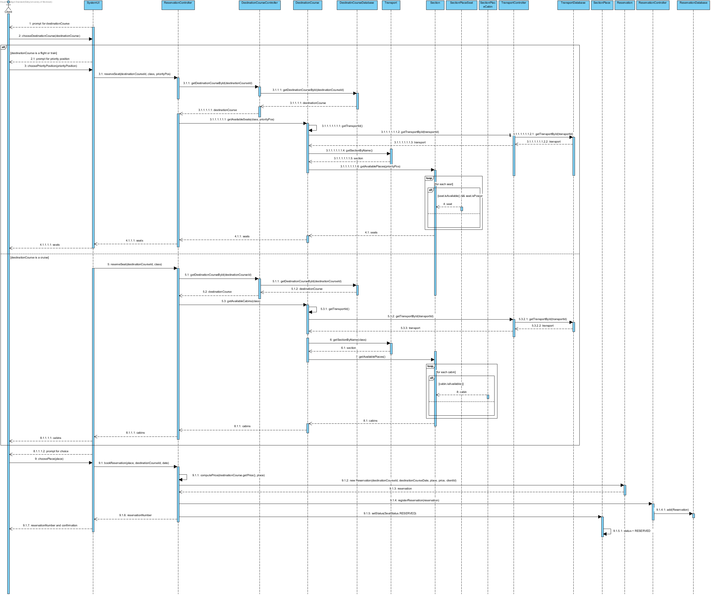
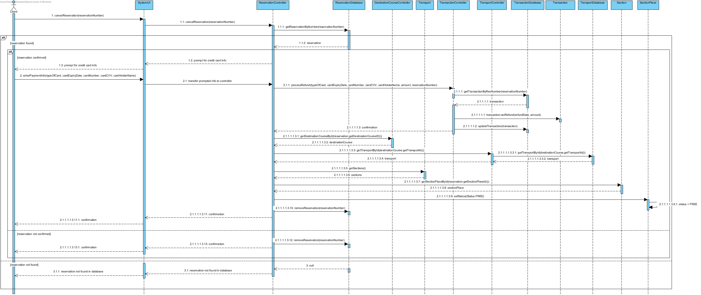
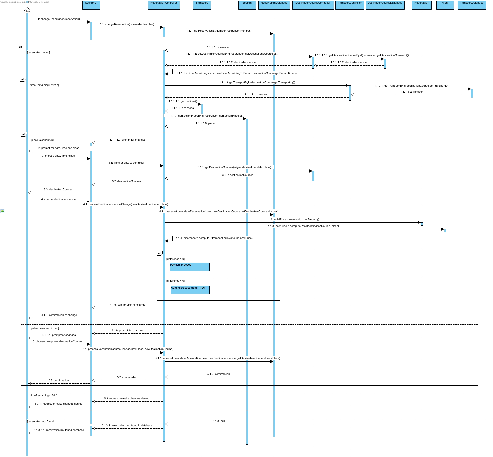

Nom: EID Alain
Matricule: 20061065
Courriel: alain.eid@umontreal.ca
temps mis: 22 heures
Nom: STEENHAUT Sami
Matricule: 20061630
Courriel: sami.steenhaut@umontreal.ca
temps mis: 23 heures
Nom: VOICULESCU Eduard
Matricule: 20078235
Courriel: eduard.voiculescu@umontreal.ca
temps mis: 25 heures
Soumetteur: VOICULESCU Eduard
| Tâche | Alain | Sami | Eduard |
|---|---|---|---|
Design logiciel [55%] :
|
33% | 33% | 33% |
Qualité du design [45%]:
|
30% | 30% | 40% |
| Justifications ? (voir plus bas) | |||
| Bonus (pas de note partielle) [10%] |
Vérifier les vols/itinéraires disponibles
Réserver un siège/cabine
Payer un siège/cabine

Annuler une réservation
Changer une réservation
Le port de départ et d'arrivée doit être le même
context DestinationCourseCruise inv:
self.destinationDeparture = self.destinationArrival
Un paquebot peut être assigné à plusieurs itinéraires tant qu'ils ne se chevauchent pas.
context DestinationCourseCruise inv:
self.allInstances()->forAll(d1,d2 | d1.transportId = d2.transportId implies d1.arrivalTime < d2.departureTime OR d1.departureTime > d2.arrivalTime)
Réserver ne peut se faire que pour un siège/cabine libre.
context SectionPlace::reserved():Boolean
pre : self.status = "FREE"
post : self.status = "RESERVED"
Cette section sera divisé en 3 sous sections.
Nous avons remarqué que nos classes pouvaient être regroupé en 3 "types" de classes. Nous avons les classes objets (abstraites et leurs enfants), les classes de bases de données et les classes contrôleurs.
Pour le type des classes contrôleurs ainsi que les UI, nous remarquons que toutes ces classes ont comme type de couplage un couplage par paquet. La raison est que souvent nous envoyons un objet au complet au contrôleurs et que seulement une partie des informations de cet objet est utilisée.
Pour le type des classes bases de données, nous remarquons que toutes ces classes ont comme type de couplage un couplage par données. La raison est que souvent nous envoyons un objet au complet à la base de données et elle garde TOUTES les informations de l'objet.
Pour le type des classes objets (abstraites et leurs enfants):, nous remarquons que toutes ces classes ont comme type de couplage un couplage par données. La raison est que ces classes ne servent qu'à envoyé des données. On pourrait aussi penser que c'est de type par paquet, car on accède souvent à trop d'éléments de cette strature de données.
On peut remarqué les astérix à Transport, Section et SectionPlace. Nous les avons placé là, car entre elles, ces classes ont un couplage par contrôle. La raison est que si transport n'existe pas, section n'éxiste pas et si section n'éxiste pas, sectionplace assigné à la section n'éxiste pas.Il en de même pour les classes UI, si elle n'éxiste pas, les accès aux autres classes sont impossibles.
On peut voir que les résultats des mesures de CBO suivent la même tendance que les types de couplages que nous avons discuté.
*sauf pour certaines exeptions où le couplage est très élévé*
Pour l'odre d'implémentation et la génération de code, il faudrait suivre en ordre croissant la mesure de CBO des classes à commencer par :
Classes objets → Classes de bases de données → Classes contrôleurs → Classes UI.
Nous avons fait notre possible pour avoir un cohésion la plus forte possible en ayant des classes qui avait des fonctions précises! Nous allons continuer avec les groupes des classes dans la section couplage.
Pour le type des classes contrôleurs, nous avons une cohésion communicationnelle, car ce sont tous des modules qui effectuent une série d'actions reliées par la procédure que l'objet, dont le contrôleur est responsable, doit suivre. Les actions que les classes de contrôleurs effectuent opèrent aussi sur ces mêmes objets. La cohésions des classes contrôleurs est donc forte.
Pour le type des classes debase de données, nous avons une cohésion fonctionnelle, car ce sont tous des modules qui contribue à éxactement une seule tâche soit mettre dans un dictionnaire des objets de même type. Les même opérations peut être réutilisée dans our n'importe quels objets stockés dans une base de données. La cohésions des classes de base de donnée est donc très forte.
Pour le type des classes deobjets (abstraites et leurs enfants), nous avons une cohésion informationnelle, car ce sont tous des modules qui effectuent plusieurs actions différentes mais qui travail sur le même obejts. La cohésions des classes des objects est donc forte.
Pour le type des classes deUI, la cohésions des classes des UI est forte.
Calcul du fardeau des classes
| Classe | Fardeau | Réutilisation | Domaine |
|---|---|---|---|
| User | F(String) + 1 + F(Date) + 1 = 0 + 1 + 0 + 1 = 2 | Moyenne | Métier |
| UserClient | F(User) + 1 = 3 | Moyenne | Métier |
| UserAdmin | F(User) + 1 = 3 | Moyenne | Métier |
| UserDatabase | F(HashMap) + 1 + F(User) + 1 = 0 + 1 + 2 + 1 = 4 | Moyenne | Architecture |
| UserController | F(UserDatabase) + 1 = 4 + 1 = 5 | Faible | Application |
| SystemUI | F(UserController) + 1 + F(ClientUI) + 1 + F(AdminUI) + 1 = 5 + 1 + 38 + 1 + 38 + 1 = 84 | Élevée | Application |
| ClientUI | F(ReservationController) + 1 = 37 + 1 = 38 | Élevée | Application |
| AdminUI | F(ServiceController) + 1 + F(TransactionController) + 1 + F(DestinationCourseController) + 1 = 6 + 1 + 22 + 1 + 7 + 1 = 38 | Élevée | Application |
| ReservationController | F(ReservationDatabase) + 1 + F(DestinationCourseController) + 1 + F(TransactionController) + 1 = 5 + 1 + 7 + 1 + 22 + 1 = 37 | Faible | Application |
| ReservationDatabase | F(HashMap) + 1 + F(Reservation) + 1 = 0 + 1 + 3 + 1 = 5 | Moyenne | Architecture |
| Reservation | F(String) + 1 + F(ReservationStatus) + 1 + F(Date) + 1 = 0 + 1 + 0 + 1 + 0 + 1 = 3 | Élevée | Métier |
| TransactionController | F(TransactionDatabase) + 1 + F(ReservationController) + 1 = 5 + 1 + 15 + 1 = 22 | Faible | Application |
| TransactionDatabase | F(Transaction) + 1 + F(HashMap) + 1 = 3 + 1 + 0 + 1 = 5 | Moyenne | Architecture |
| Transaction | F(String) + 1 + F(Double) + 1 + F(Date) + 1 = 0 + 1 + 0 + 1 + 0 + 1 = 3 | Élevée | Métier |
| TransportController | F(TransportDatabase) + 1 + F(Boolean) + 1 = 9 + 1 + 0 + 1 = 11 | Faible | Application |
| TransportDatabase | F(HashMap) + 1 + F(Transport) + 1 = 0 + 1 + 7 + 1 = 9 | Moyenne | Architecture |
| Transport | F(String) + 1 + F(Section) + 1 + F(List) + 1 = 0 + 1 + 4 + 1 + 0 + 1 = 7 | Élevée | Métier |
| TransportAirplane | F(Transport) + 1 + F(int) + 1 = 7 + 1 + 0 + 1 = 9 | Moyenne | Métier |
| TransportBoat | F(Transport) + 1 + F(int) + 1 = 7 + 1 + 0 + 1 = 9 | Moyenne | Métier |
| TransportTrain | F(Transport) + 1 + F(int) + 1 = 7 + 1 + 0 + 1 = 9 | Moyenne | Métier |
| Section | F(Double) + 1 + F(SectionPlace) + 1 + F(List) + 1 = 0 + 1 + 1 + 1 + 0 + 1 = 4 | Élevée | Métier |
| SectionCabin | F(Section) + 1 + F(int) + 1 = 4 + 1 + 0 + 1 = 6 | Élevée | Métier |
| SectionCabinInterieur | F(SectionCabin) + 1 = 6 + 1 = 7 | Moyenne | Métier |
| SectionCabinOcean | F(SectionCabin) + 1 = 6 + 1 = 7 | Moyenne | Métier |
| SectionCabinSuite | F(SectionCabin) + 1 = 6 + 1 = 7 | Moyenne | Métier |
| SectionCabinFamille | F(SectionCabin) + 1 = 6 + 1 = 7 | Moyenne | Métier |
| SectionCabinDeluxe | F(SectionCabin) + 1 = 6 + 1 = 7 | Moyenne | Métier |
| SectionAirplane | F(Section) + 1 = 4 + 1 = 5 | Moyenne | Métier |
| SectionAirplaneFirstClass | F(SectionAirplane) + 1 = 5 + 1 = 6 | Moyenne | Métier |
| SectionAirplaneBuisnessClass | F(SectionAirplane) + 1 = 5 + 1 = 6 | Moyenne | Métier |
| SectionAirplanePremiumClass | F(SectionAirplane) + 1 = 5 + 1 = 6 | Moyenne | Métier |
| SectionAirplaneEconomicClass | F(SectionAirplane) + 1 = 5 + 1 = 6 | Moyenne | Métier |
| SectionTrain | F(Section) + 1 + F(SectionPlaceNarrowSeat) + 1 = 4 + 1 + 10 + 1 = 16 | Élevée | Métier |
| SectionTrainPremium | F(SectionTrain) + 1 = 16 + 1 = 17 | Moyenne | Métier |
| SectionTrainEconomicClass | F(SectionTrain) + 1 = 16 + 1 = 17 | Moyenne | Métier |
| SectionPlace | F(String) + 1 = 0 + 1 = 1 | Élevée | Métier |
| SectionPlaceCabin | F(SectionPlace) + 1 + F(int) + 1 + F(Status) + 1 = 1 + 1 + 0 + 1 + 0 + 1 = 4 | Moyenne | Métier |
| SectionPlaceSeat | F(SectionPlace) + 1 + F(Position) + 1 + F(Time) + 1 + F(SectionAirplane) + 1 = 1 + 1 + 0 + 1 + 5 + 1 = 9 | Moyenne | Métier |
| SectionPlaceNarrowSeat | F(SectionPlaceSeat) + 1 = 10 | Moyenne | Métier |
| SectionPlaceConfortSeat | F(SectionPlaceSeat) + 1 = 10 | Moyenne | Métier |
| SectionPlaceMediumSeat | F(SectionPlaceSeat) + 1 = 10 | Moyenne | Métier |
| SectionPlaceLargeSeat | F(SectionPlaceSeat) + 1 = 10 | Moyenne | Métier |
| DestinationCourseController | F(DestinationCourseDatabase) + 1 = 6 + 1 = 7 | Faible | Application |
| DestinationCourseDatabase | F(HashMap) + 1 + F(DestinationCourse) + 1 = 0 + 1 + 4 + 1 = 6 | Moyenne | Architecture |
| DestinationCourse | F(Date) + 1 + F(Double) + 1 + F(City) + 1 = 0 + 1 + 0 + 1 + 1 + 1 = 4 | Élevée | Métier |
| DestinationCourseFlight | F(DestinationCourse) + 1 = 4 + 1 = 5 | Moyenne | Métier |
| DestinationCourseCruise | F(DestinationCourse) + 1 = 4 + 1 = 5 | Moyenne | Métier |
| DestinationCourseTrain | F(DestinationCourse) + 1 = 4 + 1 = 5 | Moyenne | Métier |
| ServiceController | F(ServiceDatabase) + 1 + F(Boolean) + 1 = 4 + 1 + 0 + 1 = 6 | Faible | Application |
| ServiceDatabase | F(HashMap) + 1 + F(Service) + 1 = 0 + 1 + 2 + 1 = 4 | Moyenne | Architecture |
| Service | F(City) + 1 = 2 | Élevée | Métier |
| ServiceAirport | F(Service) + 1 = 3 | Moyenne | Métier |
| ServicePort | F(Service) + 1 = 3 | ÉlMoyenneevée | Métier |
| ServiceStation | F(Service) + 1 = 3 | Moyenne | Métier |
| City | F(String) + 1 = 1 | Élevée | Métier |
| TransportCompanyController | F(TransportCompanyDatabase) + 1 + F(Boolean) + 1 = 3 + 1 + 0 + 1 = 5 | Faible | Application |
| TransportCompanyDatabase | F(HashMap) + 1 + F(TransportCompany) + 1 = 1 + 1 + 1 = 3 | Moyenne | Architecture |
| TransportCompany | F(String) + 1 = 1 | Élevée | Métier |
| TransportCompanyAirline | F(TransportCompany) + 1 = 1 + 1 = 2 | Moyenne | Métier |
| TransportCompanyCruise | F(TransportCompany) + 1 = 1 + 1 = 2 | Moyenne | Métier |
| TransportCompanyTrain | F(TransportCompany) + 1 = 1 + 1 = 2 | Moyenne | Métier |
| ReservationStatus (Enumeration) | 0 | Moyenne | Métier |
| Status (Enumeration) | 0 | Moyenne | Métier |
| Position (Enumeration) | 0 | Moyenne | Métier |
Notre système de gestion de réservation généralisé est modélisé en MVC (Model View Controller). Nous avons fait en sorte de bien séparer les tâches que les différentes parties de notre système doit faire. Le niveau de sophistication d'une majorité des classes est du domaine de métier. Puisque c'est un système assez précis en tant que tel, les classes utiles sont plus spécifiques pour un seul type de métier. Le niveau de réutilisation des classes du domaine de métier est variant entre moyenne et élevé (pour certain cas). Les controlleurs : UserController, ReservationController, TransactionController, TransportController, DestinationCourseController, ServiceController et TransportCompanyController sont tous des classes faisant partie du domaine d'application. La raison est que ces contrôlleurs reste assez restictif en terme de réutilisation. Ces contrôleurs sont des classes utilies pour l'application de notre système de gestion de réservation généralisé. Peut-etre que le contôlleur de TransactionController pourrait être plus du type domaine de métier puisque ce dernier pourrait être appliqué dans de différent domaine. Mais face à notre système et particulièrement face aux spécifications que ce dernier offre, nous l'avons toutefois classifé comme faisant partie du domaien d'application. Pour les classes de databases : UserDatabase, ReservationDatabase, TransactionDatabase, TransportDatabase, DestinationCourseDatabase, ServiceDatabase, TransportCompanyDatabase, ces dernières font parties du domaine d'architecture avec une réutilisation moyenne. Bien évidemment, puisque nous avons fait un approche MVC et puisque nous avons fait beaucoup d'héritage d'objet, il y a certaine classe qui ont un fardeau assez élevé.
| Instabilité | Abstabilité | Paquet |
|---|---|---|
| 0 | 0.2 | User |
| 1 | 0 | Ui |
| 0 | 0.14 | Service |
| 0 | 0.17 | Destination |
| 0.75 | 0 | Reservation |
| 0 | 0 | Transaction |
| 0.33 | 0.17 | Transport |
| 0 | 0.27 | Section |
Selon le principe de Stable Dependencies Principle, un paquet doit dépendre uniquement de paquets plus stables que lui. Cela a pour but de limiter l'impact des changements et cela maximise la stabilité globale de l'application
User(instabilité = 0) dépend de rien.
UI(instabilité = 1) dépend de User(instabilité = 0) , ce qui est parfait, car UI dépend d'un paquet plus stable que lui même.
UI(instabilité = 1) dépend de Service(instabilité = 0), ce qui est parfait, car UI dépend d'un paquet plus stable que lui même.
UI(instabilité = 1) dépend de Destination(instabilité = 0), ce qui est parfait, car UI dépend d'un paquet plus stable que lui même.
UI(instabilité = 1) dépend de Réservation(instabilité = 0.75), ce qui est bon, car UI dépend d'un paquet plus stable que lui même.
UI(instabilité = 1) dépend de Transport(instabilité = 0.33), ce qui est très bien, car UI dépend d'un paquet plus stable que lui même.
Service(instabilité = 0) dépend de rien.
Destination(instabilité = 0) dépend de User.
Reservation(instabilité = 0.75) dépend de Transport(instabilité = 0.33), ce qui est bon, car UI dépend d'un paquet plus stable que lui même.
Reservation(instabilité = 0.75) dépend de Destination(instabilité = 0), ce qui est parfait, car UI dépend d'un paquet plus stable que lui même.
Reservation(instabilité = 0.75) dépend de Transaction(instabilité = 0), ce qui est parfait, car UI dépend d'un paquet plus stable que lui même.
Transaction(instabilité = 0) dépend de rien.
Transport(instabilité = 0.33) dépend de Section(instabilité = 0), ce qui est parfait, car UI dépend d'un paquet plus stable que lui même.
Section(instabilité = 0) dépend de rien.
En résumé, nos dépendances( au niveau de la stabilité )sont parfaites.
Pour faire discussion sur le graphe IA, comme on peut voir dans le graphe, notre Système de Gestion de Réservation Généralisé n'est pas tout à fait parfait. Que ce soit une erreur dans l'implémentation de notre diagramme de classe ou dans notre diagramme de paquet, il y a toutefois quelques soucis. Nos paquets Ui et reservation se situe très proche de la ligne de MainSequence. Les paquets Ui et reservation sont instables et sont concrets. Cela est bon, puisque dans le design de conception du logiciel, on veut se trouver le plus possible sur la droite MainSequence. Si on est pour avoir des classes instabales, ces dernières doivent être concrêtes (proche du point (1,0)). Si d'une autre part, les classes sont très stables, ces classes devraient être abstaites (proche du point (0,1)). D'une autre part, les paquets section, user, destination, service et transaction sont des paquets avec aucune instabilité (ils sont stables comme paquets) et ils sont peu ou presque pas d'abstraction. Malheureusement, cela places ces paquets (section, user, destination, service et transaction) dans la "Zone of Pain" puisque leur degré d'abstraction est bas et leur degré d'instabilité est bas ou non-existant. Le paquet transport se trouve entre la "Zone of Pain" et la droite descendante de MainSequence. Pour faire part d'un commentaire, il semble que la métrique pour calculer l'abstraction d'un paquet reste assez vague en tant que telle. Un exemple serai une classe ayant 10 méthodes concretes mais ayant 1 méthode virtuelle et cette dernière serai classé comme une classe ayant seulement des méthodes virtuelles (source : https://www.cs.utexas.edu/users/downing/papers/Stability-1996.pdf).
Nous avons le paquet UI qui dépend du paquet User
Open/Closed Principle
Dans la conception du système, nous avons grandement utilisé l'abstraction pour implémenter des éléments similaires,
mais tout de même distincts. Nous avons utilisé des classes abstraites notamment pour définir les éléments généraux
comme Section, SectionCabin, SectionTrain, SectionAirplane, SectionPlace et SectionPlaceSeat
puis nous avons implémenter avec des classes concrètes les éléments plus spécifiques propres aux éléments précédents
comme SectionCabinInterieure, SectionTrainPremiumClass, SectionAirplaneFirstClass, SectionPlaceNarrowSeat, etc. Cette
conception respecte le Open/Closed Principle puisque nous avons étendu les classes générales et abstraites pour définir
des éléments spécifiques avec des classes concrètes. De plus, ces classes concètes restent ouvertes à l'extension, si
nécessaire. D'autres abstractions similaires ont été utilisées dans notre conception et peuvent être observées dans notre
diagramme de classes.
Single Responsibility Principle
Nous avons élaboré une conception selon laquelle chaque classe a une seule fonctionnalité. En effet, les classes de modèle
servent uniquement de modèle, les classes Database servent uniquement à stocker de l'information et les classes de vue servent
uniquement à l'affichage. Cela fait en sorte que si nous voudrions ajouter une autre fonctionnalité à une de ces classes,
nous devrons créer une nouvelle classe dans le but de préserver le principe de responsabilité unique. Donc, notre conception
respecte le Single Responsibility Principle.
Dependancy Inversion Principle
Nous utilisions bien le Dependency Inversion Principle(DPI) car la majorité de nos contrôleurs sont dépendants de classes abstraites, par exemple le transportController est dépendant de Transport qui est une classe abstraite, DestinationCourseController est aussi dépendant d'une classe abstraite qui est DestinationCourse, etc.
Composite Reuse Principle
Nous n'utilisons pas bien le Composite Reuse Principle, car on peut le voir quand on attribue le modificateur de prix pour chaque type de section, on récrit le même code, quand on aurait pu créer une classe ModificationPrice qui serait abstrait avec des classe qui extends dans le genre PremierModificationPrice(),EconomiqueModificationPrice, ect.
Stable Abstractions Principle
On peut voir avec le Graphe IA, que ce principe n'est pratiquement pas respecté. On a presque toutes nos classes dans la dead zone. On espère fortement que c'est une erreur de calcul...
Stable Dependancies Principle
Si on se fit à la section avec le Graphe IA, on peut voir qu'on respecte à la perfection ce principe.
Acyclic Dependency Principle
En se référant au diagramme de paquets, on peut constater que les dépendances entre les paquets ne forment pas de cycles et donc
notre conception respecte le Acyclic Dependency Principle.